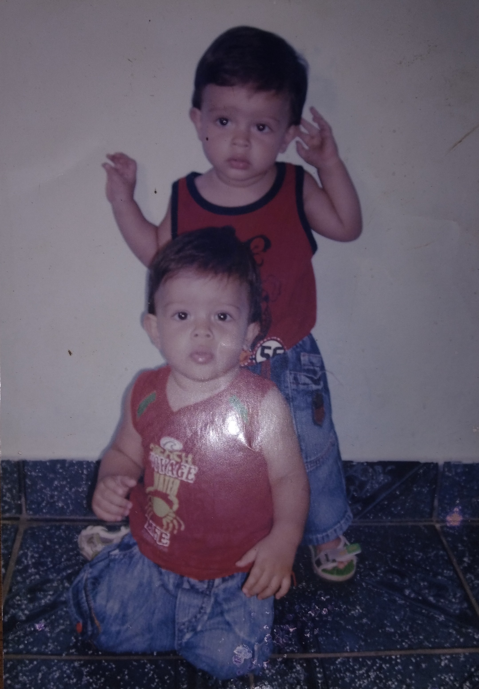
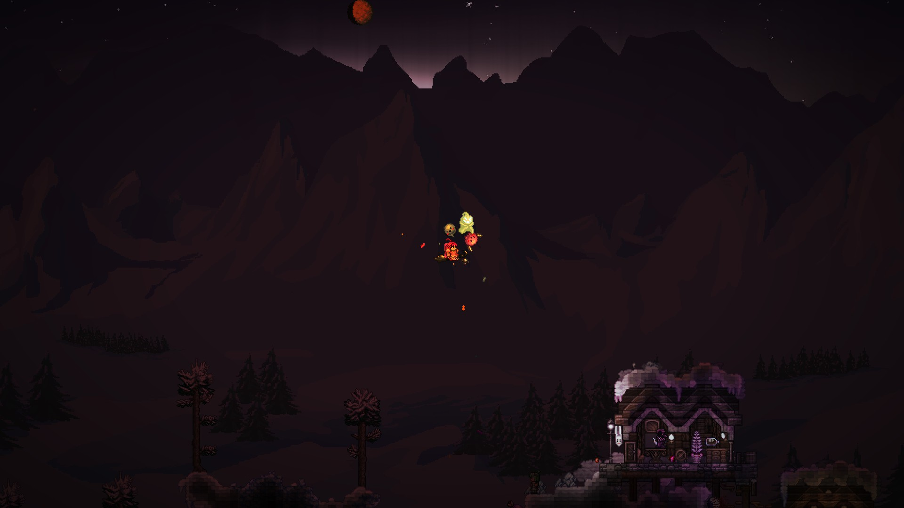
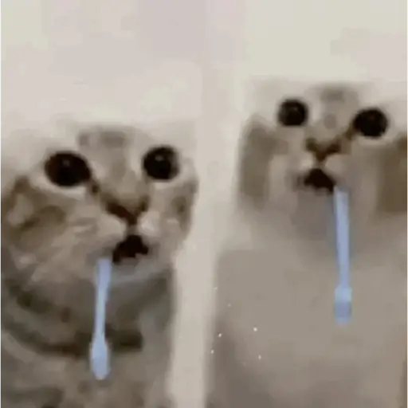
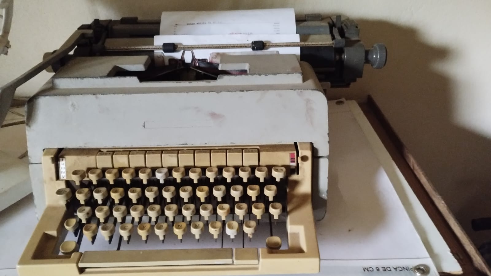

// galeria
Galeria de Fotos
Evidências fotográficas da minha luta diária contra a entropia (e contra o sono).

Não sei quem sou eu




Desenvolvedor em formação, aprimorando minhas capacidades.
E tentando ter controle com as 6,022 × 10²³ personalidades diferentes.
Estudo Engenharia de Computação, pois jogar muito não me traz dinheiro.
Relato de alguém que cansou de jogar Terraria e foi sofrer com cálculos
Nascido em Timóteo, MG, vindo de uma família simples e acolhedora,
responsável pela minha criação e cuidado.
Sempre fui aconselhado a estudar e sempre fazer com excelência e o meu melhor.
Estudante do ensino público durante toda a vida. Passei pelas escolas Municipal Maria Aparecida Martins Prado (fundamental) e Estadual Haydée de Souza Abreu (médio).
Meu primeiro contato com a programação foi no ensino médio — resultado de curiosidade e tempo livre. Aprendi a base da lógica de programação por pura vontade própria.
Ainda com grande paixão em jogos (que destroem minha sanidade mental), curso Engenharia de Computação no CEFET-MG Timóteo desde 2025, buscando experiências via estágio e empresa júnior.
Evidências fotográficas da minha luta diária contra a entropia (e contra o sono).




Maluco em formação com vontade de explodir tudo.
Coisas que construí entre uma crise existencial e outra.
Conversor bidirecional entre texto e código Morse, com interface gráfica feita em Tkinter.
Código fonte →Ferramenta de criptografia e decriptografia de texto, desenvolvida na disciplina de Fundamentos de Programação II.
Código fonte →Implementação dos conceitos iniciais de Programação Orientada a Objetos.
Código fonte →Primeiro portfólio pessoal, desenvolvido na disciplina de Programação Web.
Código fonte →Pode ser sobre projetos, oportunidades de estágio, ou para discutir a melhor build de Terraria. Eu respondo (geralmente).